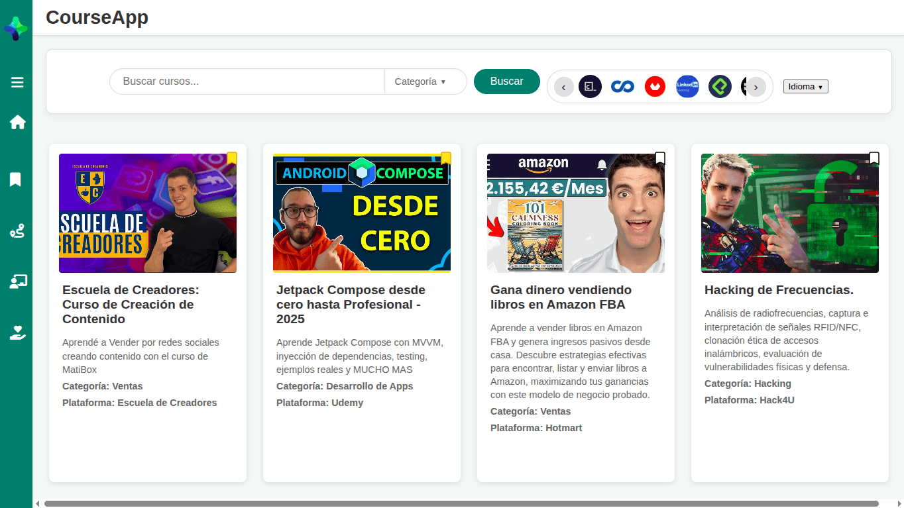

Tu biblioteca de aprendizaje
sin ocupar un solo GB.
Deja de llenar tu disco duro. CourseApp te conecta con los cursos que importan, permitiéndote acceder a ellos directamente desde la aplicación y guardarlos en tu perfil.
